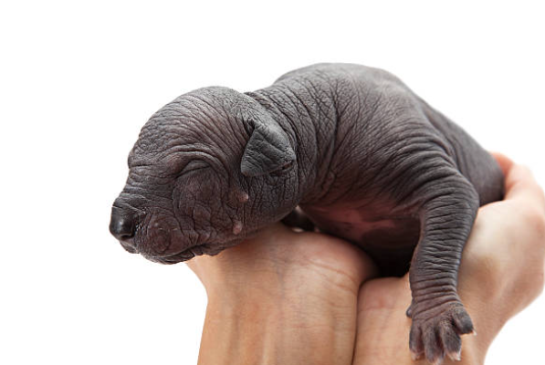
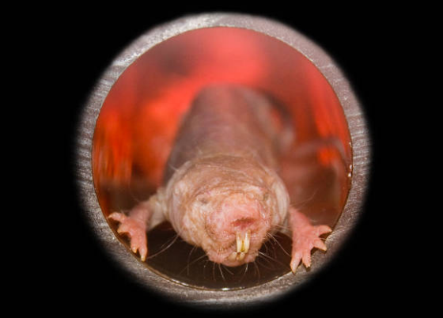

Voici notre petit Edouard, mâle de 7ans. Edouard est une boule d'amour même si il peut être un peu timide au premier abord
Patrick est un mâle de couleur noir, assez rare en son genre, il n'est pas plus ou moins robuste que ses congénère. Patrick a fêter il y a quelques mois ses 2ans.

Sur cette photo vous verrez Hélène, une femelle de 5ans très joueuse, particulièrement avec Sam un mâle de son âge. Il serait préférable pour eux de ne pas les séparer
Sam est la mascotte de notre équipe. C'est un mâle de 6ans assez espiègle, lui et Hélène ne se quittent pas; il serait préférable pour eux de ne pas les séparer.

Charlotte est considérée comme la mère de la troupe. C'est une femelle de 11ans très protectrice et affectueuse, elle apprécie particulièrement la compagnie de ses congénères.